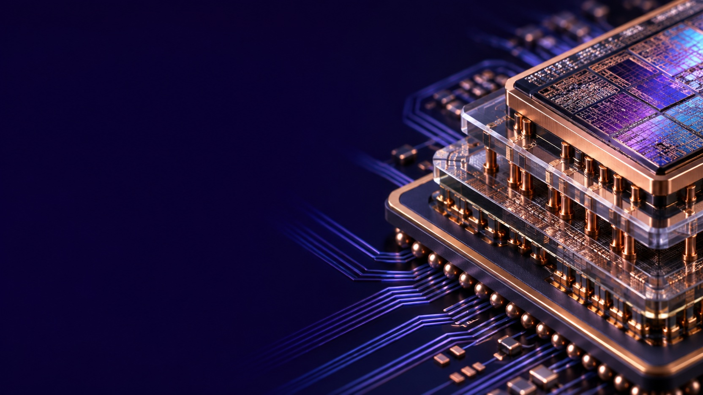
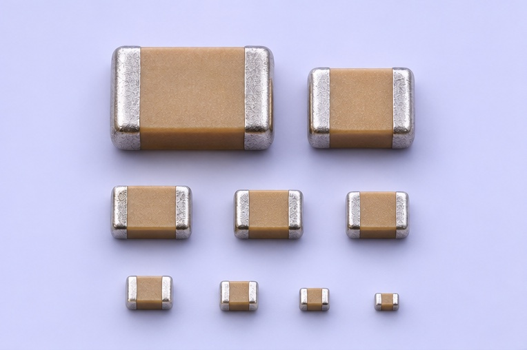
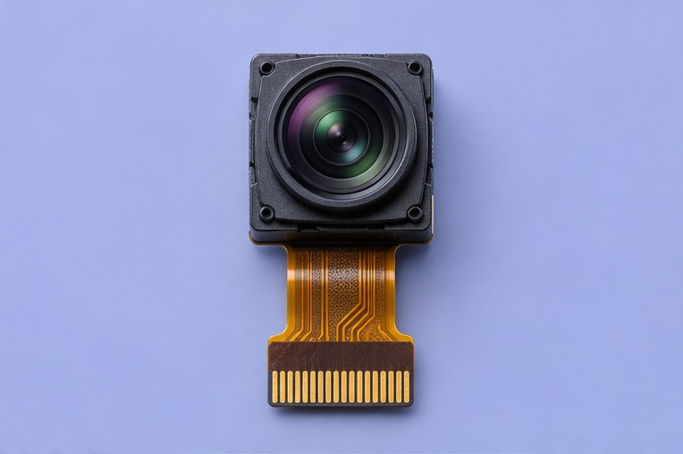
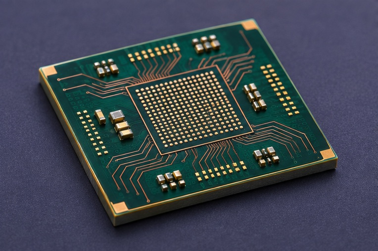
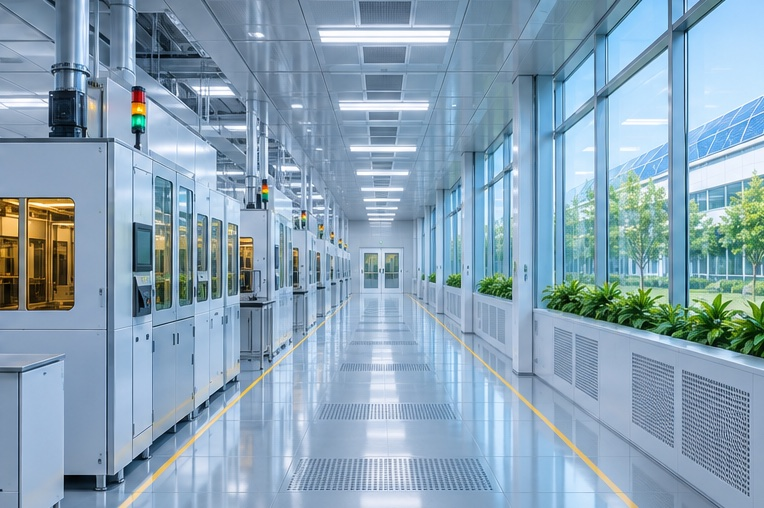

패키지 기판
반도체와 시스템 보드 사이의 연결 구조를 살펴보세요.

수동부품
회로의 요구에 맞는 세라믹 커패시터 구성을 탐색하세요.

카메라 모듈
렌즈와 센서, 연결부를 하나의 모듈에서 만나보세요.
부품 종류를 고르거나 품번으로 찾을 수 있습니다.
수동부품 GC-C102
전원과 신호 회로에 쓰이는 적층형 부품.
모듈 GC-M240
렌즈, 센서와 연결부를 조립한 이미지 모듈.

패키지 기판 GC-S410
반도체 칩과 시스템 보드를 연결하는 다층 구조.

지속가능성
환경, 작업 현장, 공급 과정에서 확인할 항목을 소개합니다.
기술 노트
전극과 층 사이 연결부가 하는 일을 살펴봅니다.
제조 이야기
반복되는 제조 조건을 같은 기준으로 기록합니다.
제품 비교와 자주 묻는 질문을 확인하세요.